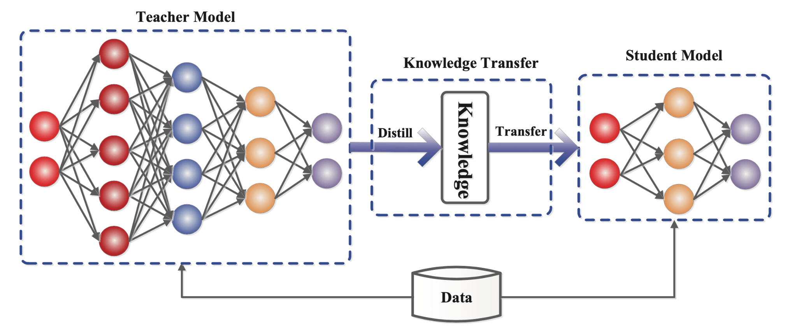
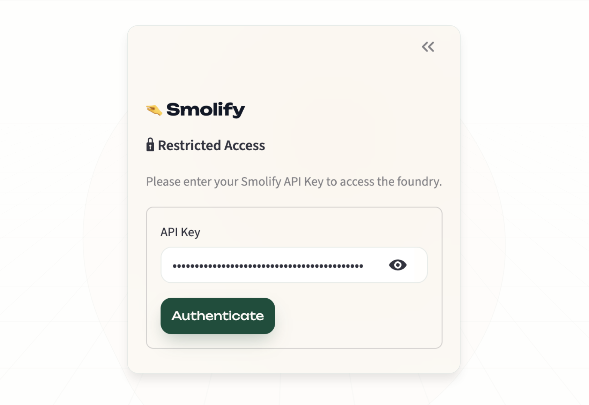
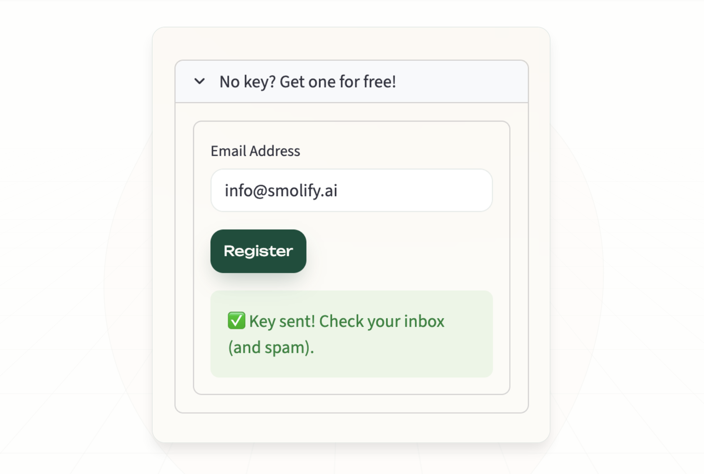
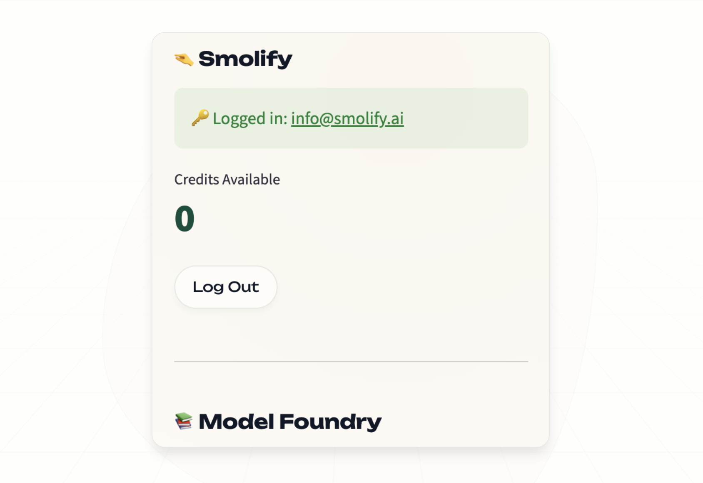
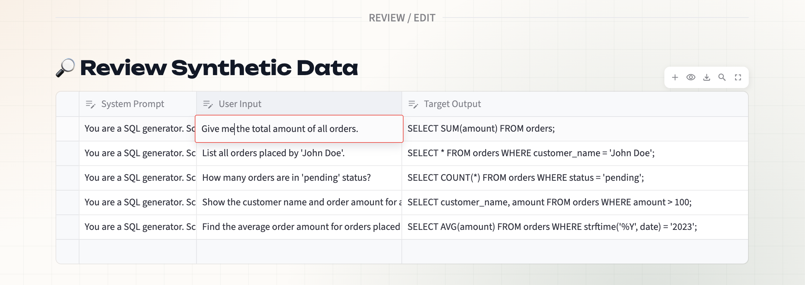
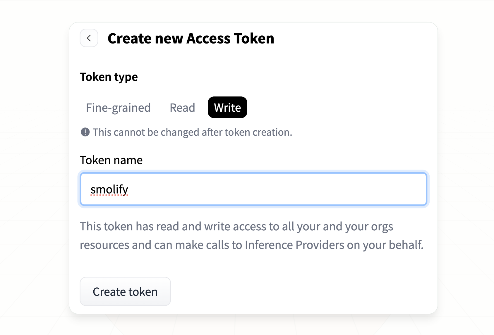
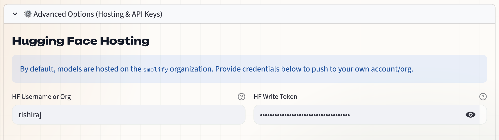
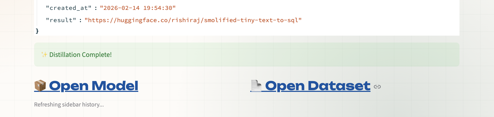

The era of the "God Model"—the obsession with trillion-parameter behemoths—has hit a wall. As demonstrated by recent disruptions in the AI industry, the future isn't solely about bigger parameters; it's about smarter data and Intelligence Distillation. We are shifting from a paradigm of renting generalist intelligence via APIs to owning specific, high-performance models that run locally.
In this deep-dive session, we will turn natural language intent into a deployable, edge-ready Google Gemma model.
What you will learn
- The DeepSeek Effect: Why the industry is pivoting to "Teacher-Student" topologies.
- Knowledge Distillation (KD) Theory: How to transfer "Dark Knowledge" from a large model to a small one.
- Smolify Pipeline: How to synthesize high-fidelity training data and fine-tune Gemma 3.
- Local Inference: Running your proprietary model on a CPU.
What you will need
- A browser (Chrome recommended).
- A Hugging Face account (for model hosting).
- Optional: A Google Gemini API Key (for the free pipeline tier).
Before we write code, we must understand the "Why." The industry is pivoting from massive compute to specialized efficiency.
Renting vs. Owning
For the past few years, developers have relied on "renting" intelligence. You send a prompt to GPT-4 or Claude, pay a fee per token, and get a response. This is excellent for generalist tasks but inefficient for specific business logic.
- Latency: Network roundtrips kill real-time interactions.
- Cost: Costs scale linearly with usage.
- Privacy: Data leaves your perimeter.
The DeepSeek Effect refers to the realization that specific business problems require specific, efficient solutions—often called DSLMs (Domain Specific Language Models). By owning a smaller model, you eliminate marginal costs and keep data local.
Teacher-Student Topology
How do we make a small model smart? We don't train it from scratch on the entire internet. We use a Teacher-Student Topology.
- The Teacher: A massive, reasoning-heavy model (like GPT-4 or Gemini Ultra). It knows everything but is slow and expensive.
- The Student: A compact architecture (like Gemma 270M or 2B). It is fast and cheap but initially "empty."
Our goal is to force the Student to mimic the Teacher's specific reasoning capabilities for a specific domain, ignoring general world knowledge that isn't relevant to the task.
We will dissect the mechanics of Knowledge Distillation (KD), tracing its roots from Hinton's 2015 origins to modern algorithms.

Dark Knowledge and Logits
When a large language model makes a prediction, it doesn't just output a single word; it calculates a probability distribution over its entire vocabulary.
- Hard Target: The actual correct word (e.g., "Cat").
- Soft Targets (Logits): The probabilities of other words. For example, if the image is a dog, the model might assign 0.9 to "Dog", 0.09 to "Cat", and 0.0001 to "Car".
The fact that "Cat" is higher than "Car" tells the model that the image looks somewhat like a cat, but nothing like a car. Hinton called this "Dark Knowledge." Traditional training only focuses on the Hard Target. Knowledge Distillation forces the student to match the Teacher's Soft Targets, learning the nuance of the decision boundary.
Softmax Temperature
To make these relationships clearer, we use Temperature (T) in the Softmax function.
- Low T: The distribution is peaky (confident).
- High T: The distribution flattens, revealing the relationships between incorrect classes (the "Dark Knowledge").
During distillation, we often raise T so the student can see the rich structure of the teacher's reasoning.
Scaling Laws
Scaling laws dictate how a student learns. We don't need a Student to have the same parameter count as the Teacher. Research shows that a Student can achieve ~95% of a Teacher's performance on a specific task with less than 1/10th of the parameters, provided the data quality is pristine.
This is where Smolify comes in.
Theory is nothing without execution. Smolify is a platform designed to "distill" massive reasoning engines into ultra-efficient, proprietary models. It acts as a "Magic Box" pipeline that automates the complex steps of:
- Prompt Engineering: Creating the perfect system instructions.
- Synthesis: Using a Teacher model to generate synthetic training data.
- Refinement: Cleaning the data via consensus mechanisms.
- Fine-tuning: Training a specific Gemma model on that data via LoRA/QLoRA.
In the following steps, we will walk through defining, synthesizing, and training your specific model within the Foundry. Let's open Smolify.AI and click "Enter The Foundry".
The application sidebar handles all authentication and credit management.
(The Restricted Access modal requires a valid API key to proceed)
- If you have an API Key: Enter it in the sidebar field and click Authenticate.
- If you are new:
- Expand the "No Key? Get one for free!" section.
- Enter your email and click Register.
- Check your inbox (and spam) for your
sk-smolify-...key.

Once authenticated, you will see your current Credit Balance and Job History in the sidebar.
(The sidebar confirms your identity and shows your remaining balance—0 in this example—along with navigation to the Model Foundry)
You can define your model's behavior using one of three methods. The dashboard provides a streamlined interface for inputting your requirements.
 (The Main Dashboard: Select a trending template or manually input your Project Name, System Persona, and Business Capability)
(The Main Dashboard: Select a trending template or manually input your Project Name, System Persona, and Business Capability)
Option A: Trending Templates (Fastest)
Click a Trending Template pill at the top of the dashboard (e.g., "🏥 Clinical Scribe").
- Action: Automatically pre-fills the Project Name, System Persona, and Description with battle-tested prompts known to produce high-quality synthetic data.
Option B: Define from Scratch (Recommended)
Navigate to the "✍️ Define Mission" tab:
- Project Name: A unique handle (e.g.,
Tiny Text-to-SQL). - System Persona: The "identity" of the AI (e.g., "You are a SQL generator...").
- Description: A clear explanation of the task, inputs, and desired outputs.

- Web Grounding: As seen in the tooltip above, you can enable Web Grounding to search the web for real-time facts. This is particularly useful to improve dataset accuracy if your model requires up-to-date knowledge rather than just logic.
Option C: Upload Data (Beta)
Navigate to the "📄 Upload Training Data" tab.
- Format: CSV or JSON.
- Schema: Columns must map to
system,user, andassistant.
Now we will use the Teacher model to generate the "Soft Targets" and training examples.
- Click ✨ Synthesize Preview.
- The app will generate a sample table under "🔎 Review Synthetic Data".
(The Review Interface: You can inspect the System Prompt, User Input, and Target Output. The red outline indicates a cell is currently being edited)
- Live Editing: This is an interactive table. Click any cell to correct logic errors before the full distillation process begins. This ensures your "teacher" model isn't passing down bad habits.
Smolify offers two distinct synthesis engines. Choose the one that fits your needs. The interface will estimate the cost before you proceed.
🏆 Option A: Managed Pipeline (1 Credit)
Best for: Production-grade models, complex reasoning tasks.
 (The Managed Pipeline estimation panel shows the credit cost. If you lack funds, you will see an "Insufficient Credits" warning)
(The Managed Pipeline estimation panel shows the credit cost. If you lack funds, you will see an "Insufficient Credits" warning)
The Managed Pipeline utilizes a Consensus Engine. We aggregate outputs from various SOTA (State-of-the-Art) reasoning models (including OpenAI GPT-5, Anthropic Claude 4.5, and Google Gemini 3) to ensure the highest fidelity synthetic data.
- Zero Config: We handle quotas and model routing.
- Higher Quality: Multi-model verification reduces hallucinations in the training data.
🛠️ Option B: BYOK / Free Mode
Best for: Prototyping, hobbyists, low-cost experiments.
If you have your own credentials, you can run the foundry for free.
 (The BYOK panel allows you to paste a Google Gemini API Key to initialize the pipeline without deducting platform credits)
(The BYOK panel allows you to paste a Google Gemini API Key to initialize the pipeline without deducting platform credits)
- Expand "⚙️ Advanced Options".
- Get your Key: You can generate a key via Google AI Studio.

- Enter your Google Gemini API Key.
- Engine: This pipeline strictly uses Gemini 2.5 Flash. While fast and efficient, it lacks the multi-model consensus of the managed tier.
- Note: You are responsible for your own API rate limits.
By default, models are hosted on the public smolify Hugging Face organization. To push to your own account, you must configure your Hugging Face credentials.
- Go to your Hugging Face Profile settings to find your Access Tokens.

- Create a New Token:
- Crucial Step: Ensure you select Write permissions (not just Read) so Smolify can push the model to your hub. Name it something recognizable like
smolify.
- Crucial Step: Ensure you select Write permissions (not just Read) so Smolify can push the model to your hub. Name it something recognizable like
- Expand "⚙️ Advanced Options" in Smolify. 
- Enter your HF Write Token and your Username/Org (e.g.,
rishiraj).
Initialize Distillation
Click Initialize Foundry Pipeline. The system will now:
- Generate ~10,000 synthetic examples.
- Spin up an L4 GPU node.
- Fine-tune a Gemma 3 (270M) model on your data.
 (The Foundry Status log provides real-time JSON feedback, showing the Job ID, current progress, and the number of high-fidelity records synthesized)
(The Foundry Status log provides real-time JSON feedback, showing the Job ID, current progress, and the number of high-fidelity records synthesized)
When the process finishes, you will see a success banner.
(Success! You will be presented with direct links to your Open Model and Open Dataset)
When the status changes to Distillation Complete, click the 📦 Open Model link. You can also view the raw JSON result containing the model URL.
Your Artifacts
Smolify automatically generates two repositories on Hugging Face:
- The Dataset: A visible record of the synthetic data used for training.

- The Model: Your fine-tuned DSLM, complete with a model card describing the architecture.

Run Locally on CPU
Your model is optimized for edge deployment. Because we distilled the intelligence into a lightweight Gemma architecture, you can run it using standard transformers on a CPU.
from transformers import AutoProcessor, AutoModelForCausalLM
# Your specific model ID will be in the results link
model_id = "your-username/smolified-project-name"
processor = AutoProcessor.from_pretrained(model_id, device_map="auto")
model = AutoModelForCausalLM.from_pretrained(model_id, dtype="auto", device_map="auto") # Runs on CPU!
message = [
{"role": "system", "content": "Your System Prompt"},
{"role": "user", "content": "Your Input"}
]
inputs = processor.apply_chat_template(message, add_generation_prompt=True, return_dict=True, return_tensors="pt")
out = model.generate(**inputs.to(model.device), pad_token_id=processor.eos_token_id, max_new_tokens=128)
output = processor.decode(out[0][len(inputs["input_ids"][0]):], skip_special_tokens=True)
print(output)
You have successfully distilled SOTA intelligence into a local Gemma model!
What we've covered
- Understanding the shift from generalist APIs to specific local models.
- The theory of Knowledge Distillation and Teacher-Student topologies.
- Using Smolify to synthesize data and fine-tune Gemma.
- Running your proprietary model on CPU.
Next Steps
- Test your model against the "Teacher" to see how close the performance is.
- Try deploying this model to an Android device using MediaPipe.